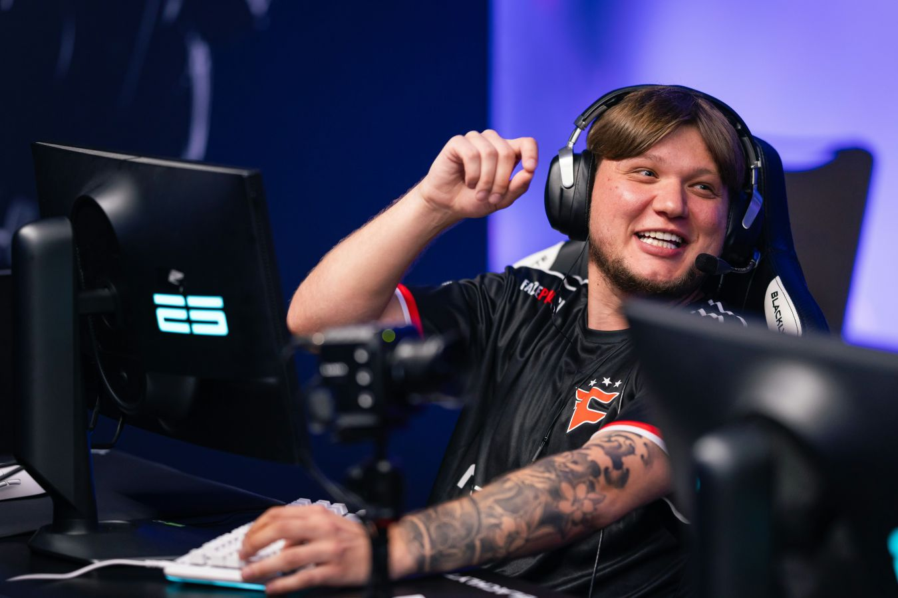

Технології кіберспорту
Вплив кіберспортивних технологій на формування цифрової культури молоді
Актуальність теми
Кіберспорт є одним із найдинамічніших явищ сучасної цифрової культури. Він поєднує технології, спорт і медіа, формуючи нові моделі соціальної взаємодії та самореалізації молоді.
Мета та завдання дослідження
- Визначити роль кіберспорту в сучасній культурі
- Проаналізувати технологічні аспекти розвитку кіберспорту
- Дослідити вплив на цифрові цінності та поведінку молоді
Сутність кіберспорту
Кіберспорт — це організована змагальна діяльність у сфері відеоігор, що має професійні команди, турніри та глобальну аудиторію.
Основні напрями кіберспорту
- MOBA — Dota 2, League of Legends
- FPS — Counter-Strike 2, Valorant
- RTS — StarCraft II, Warcraft III
- Симулятори — FIFA, NBA 2K, Rocket League
- Battle Royale — PUBG, Fortnite, Apex Legends
Вплив на цифрову культуру молоді
Кіберспорт формує цифрову ідентичність, розвиває комунікацію, стимулює інтерес до ІТ та медіа й створює нові професійні можливості.